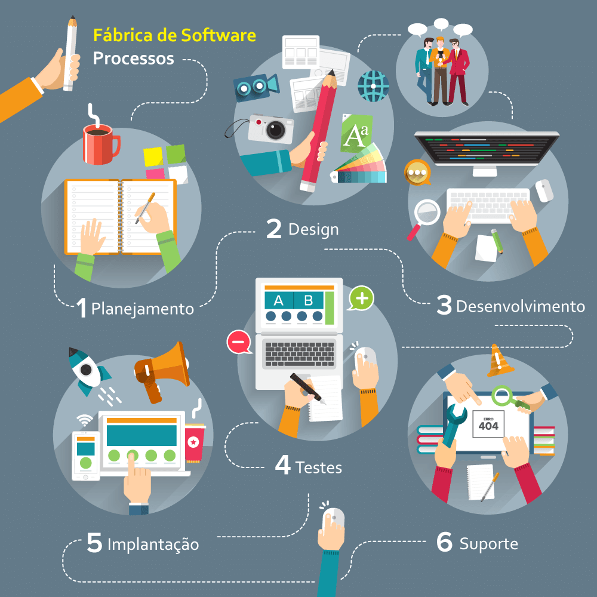

Fábrica de Software
Um espaço dentro da faculdade que simula um ambiente real de uma empresa, dando oportunidade aos alunos de todos os períodos ter uma aproximação com processos e metodologias de Desenvolvimento de Software.
É importante dizer que cada fábrica tem seu próprio processo de trabalho. Porém, na grande maioria, o principal objetivo é a rápida velocidade no desenvolvimento da aplicação web, mobile ou desktop. Trabalhar com padrões muito bem estabelecidos e com cronogramas fechados é muitas vezes o que permite a agilidade na entrega.
É preciso ter em mente que parte do processo, ou até partes dos softwares, será feito com base em moldes pré-existentes. As necessidades de cada cliente e de cada projeto são adequadas utilizando esses moldes como base. Com isso, o nível de personalização e customização tende a ser limitado, e o cronograma fechado muitas vezes não permite a flexibilidade que o mercado exige atualmente. Em compensação, possuem preços bastante competitivos devido a este modelo de reutilização e padronização de componentes.
Sua demanda em uma escala variável, quando desenvolvida em uma fábrica de software, terá que se adequar a solução criada e cabe a você entender se sua necessidade permite esta flexibilidade, ou se você não pode abrir mão de um processo que se adeque 100% ao seu negócio.
